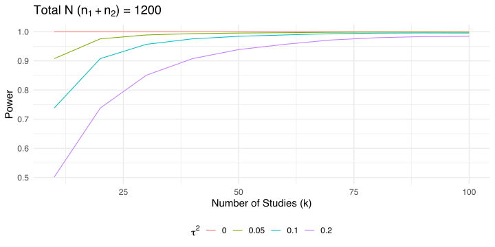

Power analysis
Filippo Gambarota
Gianmarco Altoè
University of Padova
08 February 2024
Statistical Power
Power in a nutshell1
The stastistical power is defined as the probability of correctly rejecting the null hypothesis \(H_0\).
Power in a nutshell
For simple designs such as t-test, ANOVA, etc. the power can be computed analytically. For example, let’s find the power of detecting an effect size of \(d = 0.5\) with \(n1 = n2 = 30\).
d <- 0.5
alpha <- 0.05
n1 <- n2 <- 30
sp <- 1
# Calculate non-centrality parameter (delta)
delta <- d * sqrt(n1 * n2 / (n1 + n2))
# Calculate degrees of freedom
df <- n1 + n2 - 2
# Calculate critical t-value
critical_t <- qt(1 - alpha / 2, df)
# Calculate non-central t-distribution value
non_central_t <- delta / sp
# Calculate power
1 - pt(critical_t - non_central_t, df)
#> [1] 0.4741093Power in a nutshell
The same can be done using the pwr package:
power <- pwr::pwr.t.test(n = n1, d = 0.5)
power
#>
#> Two-sample t test power calculation
#>
#> n = 30
#> d = 0.5
#> sig.level = 0.05
#> power = 0.4778965
#> alternative = two.sided
#>
#> NOTE: n is number in *each* groupPower in a nutshell
Power by simulations
Sometimes the analytical solution is not available or we can estimate the power for complex scenarios (missing data, unequal variances, etc.). The general workflow is:
- Generate data under the parametric assumptions
- Fit the appropriate model
- Extract the relevant metric (e.g., p-value)
- Repeat 1-3 several times (1000, 10000 or more)
- Summarise the results
For example, the power is the number of p-values lower than \(\alpha\) over the total number of simulations.
Power by simulations
Let’s see the previous example using simulations:
The estimated value is pretty close to the analytical value.
What about meta-analysis
Also for meta-analysis we have the two approaches analytical and simulation-based.
Analytical approach
For the analytical approach we need to make some assumptions:
- \(\tau^2\) and \(\mu_{\theta}\) (or \(\theta\)) are estimated without errors
- The \(\sigma^2_i\) (thus the sample size) of each \(k\) study is the same
Under these assumptions the power is:
\[ (1 - \Phi(c_{\alpha} - \lambda)) + \Phi(-c_{\alpha} - \lambda) \]
Where \(c_{\alpha}\) is the critical \(z\) value and \(\lambda\) is the observed statistics.
Analytical approach - EE model
For an EE model the only source of variability is the sampling variability, thus \(\lambda\):
\[ \lambda_{EE} = \frac{\theta}{\sqrt{\sigma^2_{\theta}}} \]
And recalling previous assuptions where \(\sigma^2_1 = \dots = \sigma^2_k\):
\[ \sigma^2_{\theta} = \frac{\sigma^2}{k} \]
Analytical approach - EE model
For example, a meta-analysis of \(k = 15\) studies where each study have a sample size of \(n1 = n2 = 20\) (assuming again unstandardized mean difference as effect size):
Be careful that the EE model is assuming \(\tau^2 = 0\) thus is like having a huge study with \(k \times n_1\) participants per group.
Analytical approach - RE model
For the RE model we just need to include \(\tau^2\) in the \(\lambda\) calculation, thus:
\[ \sigma^{2\star}_{\theta} = \frac{\sigma^2 + \tau^2}{k} \]
The other calculations are the same as the EE model.
Analytical approach - RE model
The power is reduced because we are considering another source of heterogeneity. Clearly the maximal power of \(k\) studies is achieved when \(\tau^2 = 0\). Hypothetically we can increase the power either increasing \(k\) (the number of studies) or reducing \(\sigma^2_k\) (increasing the number of participants in each study).
Analytical approach - Power curves
The most informative approach is plotting the power curves for different values of \(\tau^2\), \(\sigma^2_k\) and \(\theta\) (or \(\mu_{\theta}\)).
You can use the power_meta() function:
Analytical approach - Power curves
Analytical approach - Power curves
With the analytical approach we can (quickly) do interesting stuff. For example, we fix the total \(N = n_1 + n_2\) for a series of \(k\) and check the power.

As long as \(\tau^2 \neq 0\) we need more studies (even if the total sample size is the same).
Simulation-based power
With simulations we can fix or relax the previous assumptions. For example, let’s compute the power for an EE model:
#> [1] 0.932The value is similar to the analytical simulation. But we can improve it e.g. generating heterogeneous sample sizes.
Simulation-based power curve
By repeating the previous approach for a series of parameters we can easily draw a power curve:
k <- c(5, 10, 50, 100)
es <- 0.1
tau2 <- c(0, 0.05, 0.1, 0.2)
nsim <- 1000
grid <- expand_grid(k, es, tau2)
power <- rep(NA, nrow(grid))
for(i in 1:nrow(grid)){
pval <- rep(NA, nsim)
for(j in 1:nsim){
n <- rpois(grid$k[i], 40)
dat <- sim_studies(grid$k[i], grid$es[i], grid$tau2[i], n)
fit <- rma(yi, vi, data = dat)
pval[j] <- fit$pval
}
power[i] <- mean(pval <= 0.05)
}
grid$power <- powerSimulation-based power curve

Power analysis for meta-regression
The power for a meta-regression can be easily computed by simulating the moderator effect. For example, let’s simulate the effect of a binary predictor \(x\).
Power analysis for meta-regression
Then we can plot the results:

Multilab Studies
Multilab studies
Multilab studies can be seen as a meta-analysis that is planned (a prospective meta-analysis) compared to standard retrospective meta-analysis.
The statistical approach is (roughly) the same with the difference that we have control both on \(k\) (the number of experimental units) and \(n\) the sample size within each unit.
In multilab studies we have also the raw data (i.e., participant-level data) thus we can do more complex multilevel modeling.
Meta-analysis as multilevel model
Assuming that we have \(k\) studies with raw data available there is no need to aggregate, calculate the effect size and variances and then use an EE or RE model.
k <- 50
es <- 0.4
tau2 <- 0.1
n <- round(runif(k, 10, 100))
dat <- vector(mode = "list", k)
thetai <- rnorm(k, 0, sqrt(tau2))
for(i in 1:k){
g1 <- rnorm(n[i], 0, 1)
g2 <- rnorm(n[i], es + thetai[i], 1)
d <- data.frame(id = 1:(n[i]*2), unit = i, y = c(g1, g2), group = rep(c(0, 1), each = n[i]))
dat[[i]] <- d
}
dat <- do.call(rbind, dat)
ht(dat)
#> id unit y group
#> 1 1 1 0.25351317 0
#> 2 2 1 2.21833569 0
#> 3 3 1 -1.59512076 0
#> 4 4 1 -0.57003152 0
#> 5 5 1 0.35994291 0
#> 5471 33 50 0.99274994 1
#> 5472 34 50 2.81048166 1
#> 5473 35 50 2.46494714 1
#> 5474 36 50 1.52578306 1
#> 5475 37 50 0.70916460 1
#> 5476 38 50 -0.07521999 1Meta-analysis as multilevel model
This is a simple multilevel model (pupils within classrooms or trials within participants). We can fit the model using lme4::lmer():
#> Linear mixed model fit by REML ['lmerMod']
#> Formula: y ~ group + (1 | unit)
#> Data: dat
#>
#> REML criterion at convergence: 15851.7
#>
#> Scaled residuals:
#> Min 1Q Median 3Q Max
#> -3.8783 -0.6644 -0.0152 0.6603 3.9740
#>
#> Random effects:
#> Groups Name Variance Std.Dev.
#> unit (Intercept) 0.01536 0.1239
#> Residual 1.04809 1.0238
#> Number of obs: 5476, groups: unit, 50
#>
#> Fixed effects:
#> Estimate Std. Error t value
#> (Intercept) -0.01519 0.02698 -0.563
#> group 0.47306 0.02767 17.097
#>
#> Correlation of Fixed Effects:
#> (Intr)
#> group -0.513Meta-analysis as multilevel model
Let’s do the same as a meta-analysis. Firstly we compute the effect sizes for each unit:
Meta-analysis as multilevel model
#>
#> unit m0 m1 sd0 sd1 n0 n1 yi vi
#> 1 1 0.04832768 0.8352791 1.0415511 1.0081381 51 51 0.7870 0.0412
#> 2 2 0.17514842 0.7970731 1.0065334 0.8038306 49 49 0.6219 0.0339
#> 3 3 -0.26231701 0.2935666 1.0407124 1.1675311 23 23 0.5559 0.1064
#> 4 4 -0.02154628 0.4011219 0.9582875 0.7732307 78 78 0.4227 0.0194
#> 5 5 -0.00968915 0.1157841 1.1914665 0.7034426 33 33 0.1255 0.0580
#> 45 45 -0.09326319 0.5462242 1.0407688 1.0040196 94 94 0.6395 0.0222
#> 46 46 -0.16313667 0.8368845 1.0914930 1.0872035 95 95 1.0000 0.0250
#> 47 47 0.01306647 0.1629511 1.1504861 1.1392431 49 49 0.1499 0.0535
#> 48 48 0.05309306 0.7589418 1.1088198 1.0849408 97 97 0.7058 0.0248
#> 49 49 0.03729666 0.4541249 1.0761246 0.5711910 23 23 0.4168 0.0645
#> 50 50 0.13340769 0.9028684 0.9206645 0.8649275 19 19 0.7695 0.0840Meta-analysis as multilevel model
Then we can fit the model:
#>
#> Random-Effects Model (k = 50; tau^2 estimator: REML)
#>
#> tau^2 (estimated amount of total heterogeneity): 0.0266 (SE = 0.0131)
#> tau (square root of estimated tau^2 value): 0.1631
#> I^2 (total heterogeneity / total variability): 41.61%
#> H^2 (total variability / sampling variability): 1.71
#>
#> Test for Heterogeneity:
#> Q(df = 49) = 84.5366, p-val = 0.0012
#>
#> Model Results:
#>
#> estimate se zval pval ci.lb ci.ub
#> 0.4711 0.0370 12.7309 <.0001 0.3986 0.5436 ***
#>
#> ---
#> Signif. codes: 0 '***' 0.001 '**' 0.01 '*' 0.05 '.' 0.1 ' ' 1Meta-analysis as multilevel modeling
Actually the results are very similar where the standard deviation of the intercepts of the lme4 model is \(\approx \tau\) and the group effect is the intercept of the rma model.
#> b se tau2 model
#> group 0.4730643 0.0276693 0.01536141 lme4
#> 0.4710951 0.0370040 0.02660848 metaforActually the two model are not exactly the same, especially when using only the aggregated data. See https://www.metafor-project.org/doku.php/tips:rma_vs_lm_lme_lmer.
Meta-analysis as multilevel modeling
To note, aggregating data and then computing a standard (non-weighted) model (sometimes this is done with trial-level data) is wrong and should be avoided. Using meta-analysis is clear that aggregating without taking into account the cluster (e.g., study or subject) precision is misleading.
#> Linear mixed model fit by REML ['lmerMod']
#> Formula: y ~ group + (1 | unit)
#> Data: dataggl
#>
#> REML criterion at convergence: -6.2
#>
#> Scaled residuals:
#> Min 1Q Median 3Q Max
#> -2.5291 -0.4831 0.0060 0.4325 3.7067
#>
#> Random effects:
#> Groups Name Variance Std.Dev.
#> unit (Intercept) 0.009927 0.09963
#> Residual 0.041790 0.20443
#> Number of obs: 100, groups: unit, 50
#>
#> Fixed effects:
#> Estimate Std. Error t value
#> (Intercept) -0.02031 0.03216 -0.632
#> groupm1 0.47465 0.04089 11.609
#>
#> Correlation of Fixed Effects:
#> (Intr)
#> groupm1 -0.636Mulitlab sample size vs unit
When planning a multilab study there is an important decision between increasing the sample size within each unit (more effort for each lab) or recruiting more units with less participants per unit (more effort for the organization).
We could have the situation where the number of units \(k\) is fixed and we can only increase the sample size.
We can also simulate scenarios where some units collect all data while others did not complete the data collection.
Fixed \(k\), increasing \(n\)
Let’s assume that the maximum number of labs is \(10\). How many participants are required assuming a certain amount of heterogeneity?
es <- 0.2
k <- 10
n1 <- n2 <- seq(10, 500, 10)
tau2 <- c(0.01, 0.05, 0.1, 0.2)
sim <- expand_grid(k, es, tau2, n1)
sim$n2 <- sim$n1
sim$vt <- with(sim, 1/n1 + 1/n2)
sim$I2 <- round(with(sim, tau2 / (tau2 + vt)) * 100, 3)
sim$power <- power_meta(sim$es, sim$k, sim$tau2, sim$n1, sim$n2)
ht(sim)
#> # A tibble: 11 × 8
#> k es tau2 n1 n2 vt I2 power
#> <dbl> <dbl> <dbl> <dbl> <dbl> <dbl> <dbl> <dbl>
#> 1 10 0.2 0.01 10 10 0.2 4.76 0.281
#> 2 10 0.2 0.01 20 20 0.1 9.09 0.479
#> 3 10 0.2 0.01 30 30 0.0667 13.0 0.627
#> 4 10 0.2 0.01 40 40 0.05 16.7 0.733
#> 5 10 0.2 0.01 50 50 0.04 20 0.807
#> 6 10 0.2 0.2 450 450 0.00444 97.8 0.288
#> 7 10 0.2 0.2 460 460 0.00435 97.9 0.288
#> 8 10 0.2 0.2 470 470 0.00426 97.9 0.288
#> 9 10 0.2 0.2 480 480 0.00417 98.0 0.288
#> 10 10 0.2 0.2 490 490 0.00408 98 0.288
#> 11 10 0.2 0.2 500 500 0.004 98.0 0.288Fixed \(k\), increasing \(n\)
With a fixed \(k\), we could reach a plateau even increasing \(n\). This depends also on \(\mu_{\theta}\) and \(\tau^2\).

Multilab replication studies
A special type of multilab studies are the replication projects. There are some paper discussing how to view replication studies as meta-analyses and how to plan them.
References
Borenstein, Michael, Larry V Hedges, Julian P T Higgins, and Hannah R Rothstein. 2009. “Introduction to Meta-Analysis.” https://doi.org/10.1002/9780470743386.
Hedges, L V, and T D Pigott. 2001. “The Power of Statistical Tests in Meta-Analysis.” Psychological Methods 6 (September): 203–17. https://www.ncbi.nlm.nih.gov/pubmed/11570228.
Hedges, Larry V, and Jacob M Schauer. 2019. “Statistical Analyses for Studying Replication: Meta-Analytic Perspectives.” Psychological Methods 24 (October): 557–70. https://doi.org/10.1037/met0000189.
———. 2021. “The Design of Replication Studies.” Journal of the Royal Statistical Society. Series A, 184 (March): 868–86. https://doi.org/10.1111/rssa.12688.
Jackson, Dan, and Rebecca Turner. 2017. “Power Analysis for Random-Effects Meta-Analysis.” Research Synthesis Methods 8 (September): 290–302. https://doi.org/10.1002/jrsm.1240.
Schauer, J M, and L V Hedges. 2021. “Reconsidering Statistical Methods for Assessing Replication.” Psychological Methods 26 (February): 127–39. https://doi.org/10.1037/met0000302.
Schauer, Jacob M. 2022. “Replicability and Meta-Analysis.” In Avoiding Questionable Research Practices in Applied Psychology, edited by William O’Donohue, Akihiko Masuda, and Scott Lilienfeld, 301–42. Cham: Springer International Publishing. https://doi.org/10.1007/978-3-031-04968-2_14.
———. 2023. “On the Accuracy of Replication Failure Rates.” Multivariate Behavioral Research 58: 598–615. https://doi.org/10.1080/00273171.2022.2066500.
Schauer, Jacob M, and Larry V Hedges. 2020. “Assessing Heterogeneity and Power in Replications of Psychological Experiments.” Psychological Bulletin 146 (August): 701–19. https://doi.org/10.1037/bul0000232.
Valentine, Jeffrey C, Therese D Pigott, and Hannah R Rothstein. 2010. “How Many Studies Do You Need?: A Primer on Statistical Power for Meta-Analysis.” Journal of Educational and Behavioral Statistics: A Quarterly Publication Sponsored by the American Educational Research Association and the American Statistical Association 35 (April): 215–47. https://doi.org/10.3102/1076998609346961.